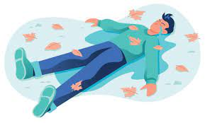
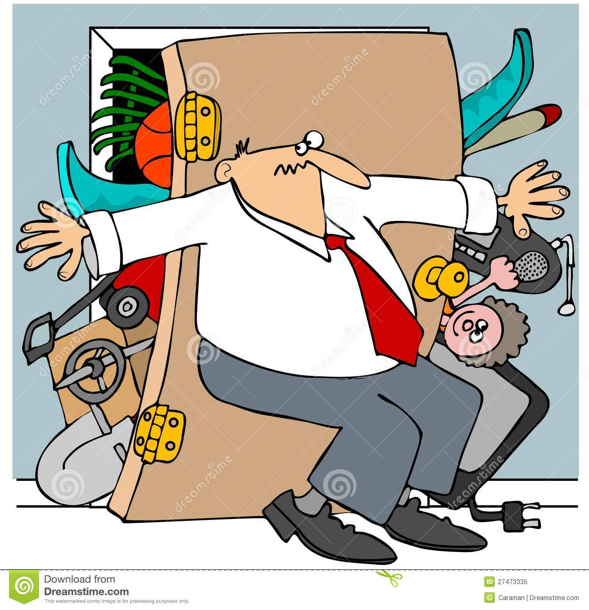
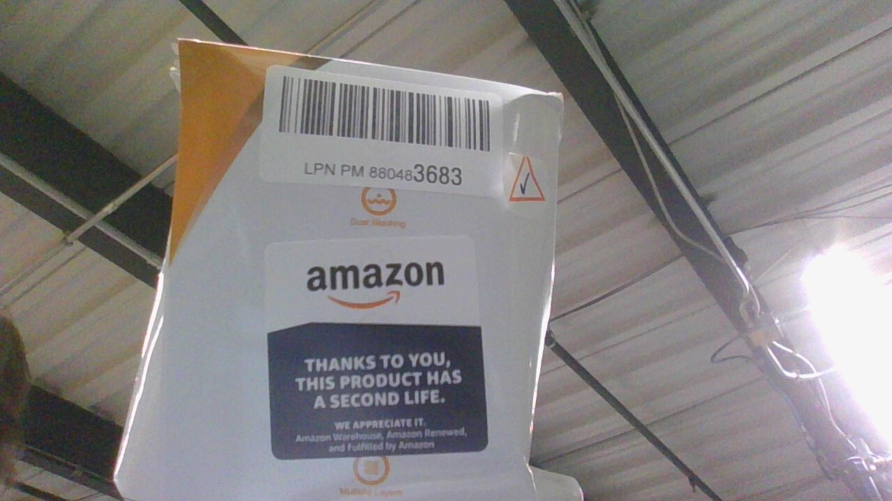
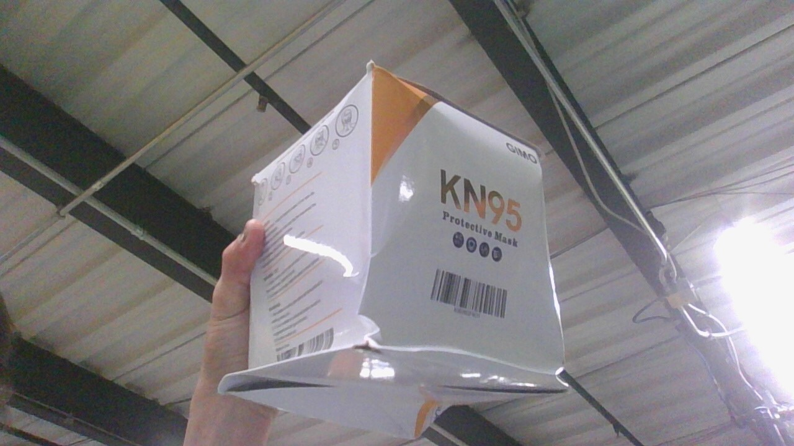

Morning Stand-up (part 1)
Call and repeat
F O O
Flat 
Overhang
Over stuffed 
You have the power to correct FOO
(foo) FOO
(flat) FLAT
(overhang) OVERHANG
(over stuffed) OVER STUFFED
Morning Stand-up (part 2)
L P N
License Plate Number
* Unique, one-of-a-kind barcode


*Item may have been considered a “damaged” item.
* Or it could be a “customer returned” item
-“graded” and than re-stowed.
Sold at a discount
Item may be slightly damaged
Packaging might be torn-up, dented, and/or taped.
On these items you may see other barcodes that can be scanned
Multiple Scannable Barcodes
XO, BOO, UPC